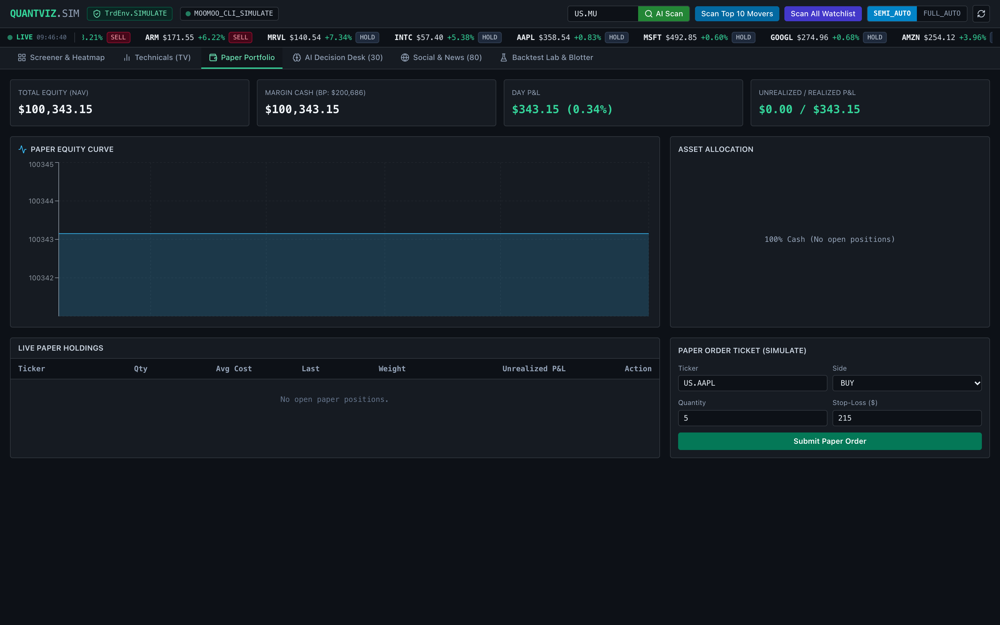
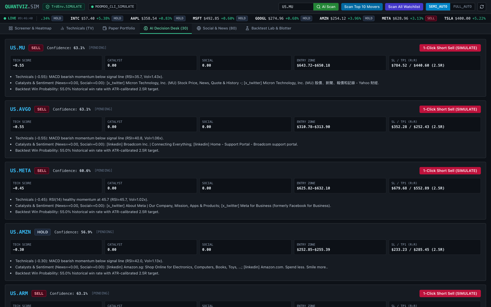
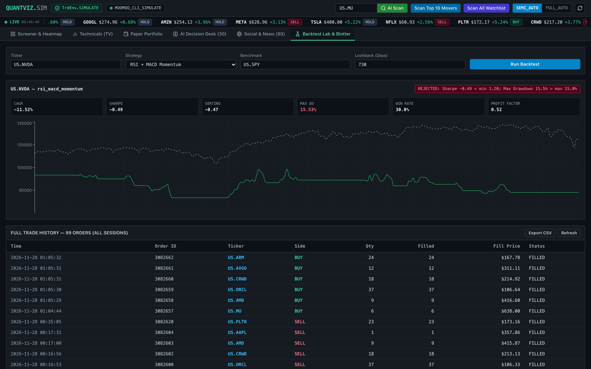

Signal: technicals + news/social + backtest bias, fused into BUY / SELL / HOLD cards with entry zone, stop and 2.5R targets.
Cadence: 1.3 s quote ticks, ~4.5 s full broker sync, immediate snapshot refresh after every trade.
How it actually ran
SEMI_AUTO (default):59 desk recommendations executed with human approval, plus manual & close tickets.
FULL_AUTO: exactly 1 auto-executed signal — PLTR BUY, 27 Nov 14:50 UTC, confidence 58.5%.
All 95 broker fills were placed by the agent through the app; zero trades outside it.
Challenge paper account: $100,000 start → $100,343.15 ending NAV.
Live trading is impossible by construction: SIMULATE-only enforcement in config and on every broker call.
02 · Architecture
Design: four parts, one loop
PART 01
Scanner / Analyst
Watchlist scan + RSI / MACD / Bollinger / EMA technicals; news & social orchestrator.
AI composite = 0.45·tech + 0.25·catalyst + 0.15·social + 0.15·backtest bias; verdict at ±0.45 / ±0.15.
→
PART 02
Backtest gate
3 strategies (RSI+MACD momentum, BB mean-reversion, EMA trend), 730-day lookback.
Gatekeeper: Sharpe ≥ 1.2 and max DD ≤ 15%; costs modelled (0.05% commission + 5 bps slippage).
→
PART 03
Risk guardrails
Hard-coded RiskManager on every execution path — manual ticket, desk execute, FULL_AUTO.
The agent / LLM cannot override a limit; rejected orders never reach the broker.
→
PART 04
Executor
Moomoo CLI, SIMULATE only; market orders for the final session.
CLI concurrency cap (2) avoids rate limits; post-trade refresh keeps app and moomoo in sync.
↺ feedback: broker positions / NAV / fills stream back into the scanner and the DuckDB decision log (orders, recommendations, backtests, snapshots)
Weights, thresholds and caps above are read from backend/ai_advisor.py, backend/risk_manager.py, config/settings.py and the stored gatekeeper reason — not from design intent.
03 · Strategy
Long & short intraday scalps, flat by the close
Both directions: 47 BUY vs 48 SELL fills — long scalps and short scalps / covers on US large-cap tech + ETFs.
Holding period: median round-trip 3.7 min (longest 48.8 min). No overnight exposure: inventory flat at the end of every logged day.
Trade plan on every card: entry zone around the live price, ATR-calibrated stop (2.0× ATR-14), take-profit at 2.5R.
Turnover:$345,960 notional on a $100k account (~3.5×) across 17 symbols.
Execution evolution: LIMIT tickets early (79 orders) → switched to MARKET for the final session: 20/20 filled.
Fill counts per log date; 4 failed orders (21 & 26 Nov) excluded. P&L assigned to the day the round-trip closed, FIFO over broker fills.
04 · Risk controls
Guardrails the code actually enforces
Environment
SIMULATE only
Settings validator + assert_simulate_env on every trade / account call. Live orders are impossible.
Position cap
≤ 5% NAV
Per new long or short position, checked against live NAV at order time.
Sector cap
≤ 20% NAV
Per sector via SECTOR_MAP; concentrated tech books get rejected.
Circuit breaker
−2% day
Daily drawdown limit halts new buys / shorts; closes and covers remain allowed.
Stop-loss
Mandatory
BUY stop below entry, new SHORT stop above entry — order rejected without one.
Buying power
Checked
BUY notional validated against available buying power before submission.
Every execution path (manual ticket, desk execute, FULL_AUTO) calls RiskManager.validate_order; the backtest gatekeeper blocks weak strategies upstream.
There is no max-trades-per-day cap in code. Audit found one stale-snapshot breach of the 5% cap (25 Nov) — disclosed on slide 9; the CLI-error fallback that can serve stale positions remains in the submitted code.
05 · Results
What the fills say
+$439.66
Realised · +0.44% on $100k
32 / 46
Winning round-trips · 70%
95 / 99
Filled / placed · 4 failed
$345,960
Notional traded · 17 symbols
Realised P&L by day (broker log dates)
Best & worst symbols (realised $)
Best
P&L
Worst
P&L
MU (7/7 wins)
+119.00
CRWD
−26.17
MRVL (2/2)
+91.77
AMD
−10.53
PLTR
+79.06
ORCL
−4.02
NVDA
+42.93
AAPL
−0.51
Broker-reported ending NAV $100,343.15 (+$343.15). The $96.51 gap vs fill-based realised P&L is session coverage, not fees: $92.34 was realised on 25–26 Nov, outside the broker's +$343.15 figure, which matches 27–28 Nov only ($347.31 fill-based less a $4.16 day-boundary difference). No broker export carries fee or adjustment fields, so the $4.16 is a computed residual, not an itemised charge.
Marks come from the paper environment's simulated quote feed (e.g. NFLX ≈ $60.93, COIN ≈ $107.04), not live exchange prices.
06 · Decision log & fills
Trade log: final session, 28 Nov (broker log date)
20 orders · all MARKET · all FILLED (excerpt of 10)
Time (UTC+8)
Order ID
Ticker
Side
Qty
Fill price
Type
Status
00:09:54
3082584
AAPL
BUY
1
358.747
MARKET
FILLED
00:10:10
3082585
AAPL
SELL
1
358.480
MARKET
FILLED
00:16:38
3082596
MU
SELL
6
638.940
MARKET
FILLED
00:16:49
3082599
PLTR
BUY
23
170.831
MARKET
FILLED
00:16:53
3082600
ORCL
SELL
37
106.331
MARKET
FILLED
00:17:00
3082603
AMD
SELL
9
415.870
MARKET
FILLED
00:35:05
3082620
PLTR
SELL
23
173.160
MARKET
FILLED
01:04:44
3082657
MU
BUY
6
638.003
MARKET
FILLED
01:05:29
3082658
AMD
BUY
9
416.600
MARKET
FILLED
01:05:32
3082662
ARM
BUY
24
167.775
MARKET
FILLED
Times as recorded by the broker (UTC+8; decision-log timestamps elsewhere are UTC). The 01:04–01:05 wave is the end-of-session cover / book-out: every position closed, account flat.
Full 99-order history (all sessions) lives in the app's Blotter tab with one-click CSV export; the 4 failed orders are on slide 9.
07 · Retrospective
What worked
Trading
MU momentum scalps: 7 round-trips, 7 wins, +$119.00 — the best symbol in the book.
Market-order switch: final session 20/20 MARKET fills; early LIMIT tickets could sit unfilled away from the touch.
Flat-close discipline: zero overnight exposure on every logged day; the −2% daily breaker never tripped.
Human-in-the-loop: 59 approved desk executions kept the agent accountable; FULL_AUTO was used exactly once.
Engineering
Consistent real-time state: 1.3 s quote ticks + post-trade refresh kept dashboard, NAV and the moomoo app in agreement.
Rate-limit stability: CLI concurrency cap (2) + last-good caches ended flicker and empty blotter states.
NAV correctness with shorts: broker-NAV delta adjustment fixed a false −36% day-P&L artefact (cash excludes short proceeds).
Auditable trail: every order, recommendation and backtest persisted in DuckDB; full broker history exportable to CSV.
08 · Retrospective
What failed, and why
Backtest gate rejected the NVDA RSI+MACD strategy: Sharpe −0.49 (< 1.20), max DD 15.5% (> 15%), CAGR −11.5%, win rate 30%, PF 0.52 → not adopted. Scalps ran on the technicals-led composite instead.
Win-probability design gap: NVDA SELL cards carried a 30% backtest win rate yet passed on the technicals-led composite and were human-approved at the desk. No win-probability gate existed to override — the 45% figure is the composite verdict threshold, not a win-prob acceptance line.
Resolved: neither override nor bug — no win-prob gate existed; v2 adds one (slide 11). Code fact: no execution path (manual, desk, FULL_AUTO) checks win probability; it enters the composite as 0.15·(win_prob−0.5)·1.2, with verdicts at ±0.45 composite. FULL_AUTO auto-submits only BUY / STRONG BUY verdicts.
Stale-snapshot guardrail breach: 25 Nov 23:30:09 (UTC+8), broker order 3080763 (NVDA SELL 27) landed 31 s after 3080759 and took the short to 54 sh ≈ 7.7% NAV vs the 5% cap; covered 3 min later by 3080777 (BUY 54). The cap check clamps adds, so the validated snapshot missed the first short; trigger not recorded. On CLI error the client still serves a cached snapshot — disclosed, not fixed.
4 failed orders: 21 Nov NVDA BUY 1 ×2 (first-ever tickets); 26 Nov ORCL SELL 38 and NVDA SELL 26 — reason not recorded in logs.
Social / news feed was weak, not a strength: 1,037 of 1,236 items (84%) carried sentiment 0.00 and headlines were often unrelated to the ticker → catalyst / social scores mostly 0.00 on the desk.
09 · Live demo
The running dashboard

Paper Portfolio. NAV $100,343.15, +$343.15 (0.34% vs $100k start), 100% cash — the flat close after the final cover wave.

AI Decision Desk. SELL cards at 63.1% confidence with entry zone, stop and 2.5R targets; catalyst / social scores visibly 0.00 (feed weakness, slide 9).

Blotter. Rejected-backtest banner (Sharpe −0.49, DD 15.5%) above the full 99-order history with Export CSV.
12-minute talk run-of-show
1 · Portfolio: flat close, NAV $100,343.15, and the fill-vs-broker reconciliation gap.
2 · Desk: anatomy of a card (scores, entry zone, SL / 2.5R), then a human-approved execute click.
Screenshots captured 28 Nov from the live app at localhost:8000. The dashboard runs locally from the submitted runnable package (FastAPI backend + built React frontend); no hosted trading service is claimed.
10 · Roadmap
What's next: v2
HMM regime filter (sketch only)
3-state Hidden Markov Model on returns / volatility: bull · bear · chop.
Gate direction bias: longs favoured in bull state, shorts in bear, size down or stand aside in chop.
Status: sketched for v2 — not run, not backtested. No results claimed.
Also queued
Replace simulated marks with live L1 quotes; fee-aware P&L reconciliation (close the $96.51 gap).
Enforce a win-probability gate at the execute path, closing the slide-9 design gap.
Record broker rejection reasons for failed orders so the blotter can explain every failure.
Fail closed on position-query errors instead of serving a cached snapshot (slide-9 breach).
11 · Closing
Small edge, hard limits, honest log.
#52
Challenge account ranking
$100,343.15
Ending NAV · +0.34% broker net
+$439.66
Fill-based realised · 70% wins
95 / 99
Fills · 46 round-trips · 17 symbols
Submission summary
Deck
This presentation (shareable link) — strategy, risk limits, decision log, fills & results, what worked / failed / why.
Package
Runnable agent: FastAPI backend + React dashboard, Moomoo CLI SIMULATE executor, DuckDB blotter, config, and the exported 99-order trade CSV.
Promise
Human-in-the-loop paper trading only. SIMULATE enforcement stays hard-coded; no autonomous live trading, ever.
Thank you — questions welcome. Prudvi Raj Kilaparty · QUANTVIZ.SIM